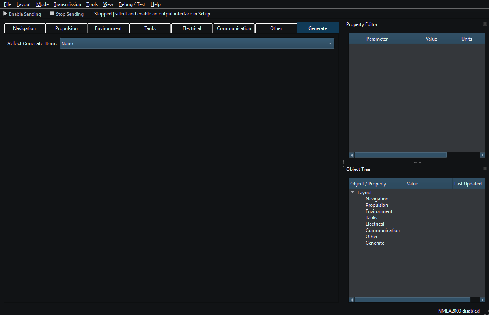

Install the RayNmeaSimulator package matching your operating system and processor. Keep the supplied runtime files together and follow the package installation instructions.
If the application reports a missing runtime library, check that the complete package was installed and matches your system. Keep the exact error for a support request. Use the supplied runtime files rather than copying libraries from another application.
Loading a Layout or Template, changing mode, selecting a route or fetching weather does not authorize external Sending. Connect hardware only after checking the intended adapter, cable, permissions and settings. Use Viewer for supported reception; Generate permits local editing and simulation but still requires explicit Sending authorization for external instrument output.
| Platform | Normal application-data root |
|---|---|
| Windows | %LOCALAPPDATA%/RFStateSide/RayNmeaSimulator |
| Linux | ~/.local/share/RFStateSide/RayNmeaSimulator, or the desktop's XDG data override |
Within that root, layouts contains saved Layouts, routes contains route folders, stylesheets contains custom themes and logs contains application/traffic logs. The Log Viewer's Open Log Folder reveals its actual current location. Legacy ~/.raynmeasimulator data may still be discovered where supported; do not delete it as a troubleshooting shortcut. Preferences and secure credentials use separate platform storage.
Layout → Startup Workspace lets you choose Empty workspace, a saved Layout or a Template. Review that choice before returning to a connected bench. Enabled generators operate locally according to their saved state; Dispatch and external Sending remain separate. Starting the app or restoring a workspace does not grant Sending authority.
For a problem on first use, keep the previous valid files and read Connection Troubleshooting or the Application Log. The default boat position and demonstration values are examples, not a verified live vessel fix.

Figure 2. An empty workspace with Sending stopped and interfaces disabled. Click to enlarge.
Introduction · System Requirements · Viewer vs Generate · Quick Start · Loading the Default Layout · Connection Troubleshooting · Enable, Dispatch and Sending · Route Overview · Engineering Units